07-选择界面的动效和交互
1 选择界面的动效
1.1 PlayerType枚举类型
先在SelectorScene中定义一个PlayerType枚举类型
private:
enum class PlayerType
{
Peashooter = 0,
Sunflower,
Invalid
};
之后添加两个玩家类型的私有变量
PlayerType player_type_1 = PlayerType::Peashooter; // 1P 角色类型
PlayerType player_type_2 = PlayerType::Sunflower; // 2P 角色类型
1.2 显示角色动画
在窗口中绘制动画时一定要将动画对象的坐标与摄像机的坐标作差，于是我们可以将这部分逻辑写入到Animation::on_draw()方法中，我们在参数列表中加入Camera
这时我们注意到，可以在底层的putimage_alpha() in
util.h中写入这部分逻辑，于是我们为这个函数添加带Camera的函数重载
inline void putimage_alpha(const Camera& camera, int dst_x, int dst_y, IMAGE* img)
{
int w = img->getwidth();
int h = img->getheight();
const Vector2 &pos_camera = camera.get_position();
AlphaBlend(GetImageHDC(GetWorkingImage()), (int)(dst_x-pos_camera.x), (int)(dst_y-pos_camera.y), w, h,
GetImageHDC(img), 0, 0, w, h, {AC_SRC_OVER, 0, 255, AC_SRC_ALPHA});
}
void on_draw(const Camera& camera, int x, int y) const
{
putimage_alpha(camera, x, y, atlas->get_image(idx_frame));
}
之后在SelectorScene::on_draw()方法中添加根据玩家类型进行渲染的逻辑（在墓碑渲染代码后添加）
switch (player_type_1)
{
case PlayerType::Peashooter:
animation_peashooter.on_draw(camera, pos_animation_1P.x, pos_animation_1P.y);
break;
case PlayerType::Sunflower:
animation_sunflower.on_draw(camera, pos_animation_1P.x, pos_animation_1P.y);
break;
}
switch (player_type_2)
{
case PlayerType::Peashooter:
animation_peashooter.on_draw(camera, pos_animation_2P.x, pos_animation_2P.y);
break;
case PlayerType::Sunflower:
animation_sunflower.on_draw(camera, pos_animation_2P.x, pos_animation_2P.y);
break;
}
另外，不要忘记到场景的update方法中调用动画的update方法
void on_update(int delta) {
animation_peashooter.on_update(delta);
animation_sunflower.on_update(delta);
}
1.3 显示角色名称
在SelectorScene中
首先定义角色名文本字符串
LPCTSTR str_peashooter_name = _T("婉豆射手");
LPCTSTR str_sunflower_name = _T("龙日葵");
之后实现下面这个函数
private:
// 绘制带有阴影效果的文本
void outtextxy_shaded(int x, int y, LPCTSTR str) {
settextcolor(RGB(45, 45, 45));
outtextxy(x + 3, y + 3, str);
settextcolor(RGB(255,255,255));
outtextxy(x, y, str);
}
通过错位绘制两边不同颜色的文字，实现了阴影效果

我们在on_draw()中绘制角色的switch语句中，不同case分别加入一些代码。
switch (player_type_1)
{
case PlayerType::Peashooter:
animation_peashooter.on_draw(camera, pos_animation_1P.x, pos_animation_1P.y);
pos_img_1P_name.x = pos_img_1P_gravestone.x + (img_gravestone_right.getwidth() - textwidth(str_peashooter_name)) / 2;
outtextxy_shaded(pos_img_1P_name.x, pos_img_1P_name.y, str_peashooter_name);
break;
case PlayerType::Sunflower:
animation_sunflower.on_draw(camera, pos_animation_1P.x, pos_animation_1P.y);
pos_img_1P_name.x = pos_img_1P_gravestone.x + (img_gravestone_right.getwidth() - textwidth(str_peashooter_name)) / 2;
outtextxy_shaded(pos_img_1P_name.x, pos_img_1P_name.y, str_sunflower_name);
break;
}
switch (player_type_2)
{
case PlayerType::Peashooter:
animation_peashooter.on_draw(camera, pos_animation_2P.x, pos_animation_2P.y);
pos_img_2P_name.x = pos_img_2P_gravestone.x + (img_gravestone_left.getwidth() - textwidth(str_peashooter_name)) / 2;
outtextxy_shaded(pos_img_2P_name.x, pos_img_2P_name.y, str_peashooter_name);
break;
case PlayerType::Sunflower:
animation_sunflower.on_draw(camera, pos_animation_2P.x, pos_animation_2P.y);
pos_img_2P_name.x = pos_img_2P_gravestone.x + (img_gravestone_left.getwidth() - textwidth(str_peashooter_name)) / 2;
outtextxy_shaded(pos_img_2P_name.x, pos_img_2P_name.y, str_sunflower_name);
break;
}
在main函数的initgraph后面设置字体,设置文本背景为透明
settextstyle(28, 0, _T("IPix"));
setbkmode(TRANSPARENT);
但是运行时发现,名字显示为乱码.看到b站评论区之后,于是我换成了Zpix字体

settextstyle(28, 0, _T("Zpix"));
setbkmode(TRANSPARENT);
1.4 背景花纹滚动效果

我们需要在背后添加花纹循环移动的效果.
如何实现图片的循环移动呢?
我们想象用一条竖直的线段分割图片,将线段左侧和右侧的图片渲染并拼接起来,就能得到一张完整的图片,然后让线段动起来,我们就能看到渲染出来的图片也开始移动了.

所以我们首先在SelectorScene中定义
int selector_background_scorll_offset_x = 0;
用来表示这条竖直线条在水平方向上滚动的距离
在on_update中让这条虚拟的线条向右移动
selector_background_scorll_offset_x += 5;
if(selector_background_scorll_offset_x >= img_peashooter_selector_background_left.getwidth())
{
selector_background_scorll_offset_x = 0;
}
然后再on_draw的开头根据角色类型选择背景图片。注意，这里根据自己的角色类型为对方的背景图赋值。
IMAGE *img_p1_selector_background = nullptr;
IMAGE *img_p2_selector_background = nullptr;
switch (player_type_2)
{
case PlayerType::Peashooter:
img_p1_selector_background = &img_peashooter_selector_background_right;
break;
case PlayerType::Sunflower:
img_p1_selector_background = &img_sunflower_selector_background_right;
break;
default:
img_p1_selector_background = &img_peashooter_selector_background_right;
break;
}
switch (player_type_1)
{
case PlayerType::Peashooter:
img_p1_selector_background = &img_peashooter_selector_background_left;
break;
case PlayerType::Sunflower:
img_p1_selector_background = &img_sunflower_selector_background_left;
break;
default:
img_p1_selector_background = &img_peashooter_selector_background_left;
break;
}
现在我们的putimage_alpha还没有对图片进行裁剪的功能，添加下面这个函数重载
inline void putimage_alpha(int dst_x, int dst_y, int width, int height, IMAGE* img, int src_x, int src_y)
{
int w = width > 0 ? width : img->getwidth();
int h = height > 0 ? height : img->getheight();
AlphaBlend(GetImageHDC(GetWorkingImage()), dst_x, dst_y, w, h,
GetImageHDC(img), src_x, src_y, w, h, {AC_SRC_OVER, 0, 255, AC_SRC_ALPHA});
}
然后再在on_draw()中的背景图片的代码之后进行绘制
//虚拟线右侧的部分
putimage_alpha(selector_background_scorll_offset_x - img_p1_selector_background->getwidth(), 0, img_p1_selector_background);
//虚拟线左侧的部分
putimage_alpha(selector_background_scorll_offset_x, 0,
img_p1_selector_background->getwidth() - selector_background_scorll_offset_x, 0, img_p1_selector_background, 0, 0);
//虚拟线左侧的部分（窗口中）
putimage_alpha(getwidth() - img_p1_selector_background->getwidth(), 0,
img_p2_selector_background->getwidth() - selector_background_scorll_offset_x, 0,
img_p2_selector_background,
selector_background_scorll_offset_x, 0 );
//虚拟线右侧的部分（窗口中）
putimage_alpha(getwidth() - selector_background_scorll_offset_x, 0,
img_p2_selector_background);
2 交互功能
2.1 角色选择
首先声明按键状态的变量
bool is_btn_1P_left_down = false; // 1P 向左切换按钮是否按下
bool is_btn_1P_right_down = false; // 1P 向右切换按钮是否按下
bool is_btn_2P_left_down = false; // 2P 向左切换按钮是否按下
bool is_btn_2P_right_down = false; // 2P 向右切换按钮是否按下
接下来处理按键逻辑，当按键抬起时，修改角色类型，并播放音效
void on_input(const ExMessage& msg) {
switch(msg.message)
{
case WM_KEYDOWN:
switch(msg.vkcode)
{
case 'A':
is_btn_1P_left_down = true;
break;
case 'D':
is_btn_1P_right_down = true;
break;
case VK_LEFT:
is_btn_2P_left_down = true;
break;
case VK_RIGHT:
is_btn_2P_right_down = true;
break;
}
break;
case WM_KEYUP:
switch(msg.vkcode)
{
case 'A':
is_btn_1P_left_down = false;
player_type_1 = (PlayerType)(((int)PlayerType::Invalid + (int)player_type_1 - 1) % (int)PlayerType::Invalid);
mciSendString(_T("play ui_switch from 0"), NULL, 0, NULL);
break;
case 'D':
is_btn_1P_right_down = false;
player_type_1 = (PlayerType)(((int)player_type_1 + 1) % (int)PlayerType::Invalid);
mciSendString(_T("play ui_switch from 0"), NULL, 0, NULL);
break;
case VK_LEFT:
is_btn_2P_left_down = false;
player_type_2 = (PlayerType)(((int)PlayerType::Invalid + (int)player_type_2 - 1) % (int)PlayerType::Invalid);
mciSendString(_T("play ui_switch from 0"), NULL, 0, NULL);
break;
case VK_RIGHT:
is_btn_2P_right_down = false;
player_type_2 = (PlayerType)(((int)player_type_2 + 1) % (int)PlayerType::Invalid);
mciSendString(_T("play ui_switch from 0"), NULL, 0, NULL);
break;
}
break;
default:
break;
}
}
最后再根据按键状态来绘制对应的ui
putimage_alpha(pos_1P_selector_btn_left.x, pos_1P_selector_btn_left.y,
is_btn_1P_left_down ? &img_1P_selector_btn_down_left : &img_1P_selector_btn_idle_left);
putimage_alpha(pos_1P_selector_btn_right.x, pos_1P_selector_btn_right.y,
is_btn_1P_right_down ? &img_1P_selector_btn_down_right : &img_1P_selector_btn_idle_right);
putimage_alpha(pos_2P_selector_btn_left.x, pos_2P_selector_btn_left.y,
is_btn_2P_left_down ? &img_2P_selector_btn_down_left : &img_2P_selector_btn_idle_left);
putimage_alpha(pos_2P_selector_btn_right.x, pos_2P_selector_btn_right.y,
is_btn_2P_right_down ? &img_2P_selector_btn_down_right : &img_2P_selector_btn_idle_right);
2.2 开始游戏
最后我们需要实现按下Enter键开始游戏的逻辑，在switch语句添加对应分支即可。
当按键抬起时，通过场景管理器控制游戏进入到游戏局内场景，同时播放对应的确认音效。
case VK_RETURN:
scene_manager.switch_to(SceneManager::SceneType::Game);
mciSendString(_T("play ui_confirm from 0"), NULL, 0, NULL);
break;
3 我的拓展
3.1 为背景花纹增加蒙版
为了给背景花纹添加蒙版，我用ps制作了下面这两张蒙版，白色位置为要显示的区域，其余位置都为透明颜色。


在util.h中为putimage_alpha添加两个函数重载，实现往图像上写入
inline void putimage_alpha(IMAGE* dst, int dst_x, int dst_y, IMAGE* img)
{
int w = img->getwidth();
int h = img->getheight();
AlphaBlend(GetImageHDC(dst), dst_x, dst_y, w, h,
GetImageHDC(img), 0, 0, w, h, {AC_SRC_OVER, 0, 255, AC_SRC_ALPHA});
}
inline void putimage_alpha(IMAGE* dst, int dst_x, int dst_y, int width, int height, IMAGE* img, int src_x, int src_y)
{
int w = width > 0 ? width : img->getwidth();
int h = height > 0 ? height : img->getheight();
AlphaBlend(GetImageHDC(dst), dst_x, dst_y, w, h,
GetImageHDC(img), src_x, src_y, w, h, {AC_SRC_OVER, 0, 255, AC_SRC_ALPHA});
}
再实现一个叠加蒙版的函数
inline void putmaskimage (IMAGE* dst_img, IMAGE* mask_img, int msk_x, int msk_y)
{
int dst_w = dst_img->getwidth();
int dst_h = dst_img->getheight();
int x_min = std::min(0, msk_x);
int x_max = std::max(dst_img->getwidth(), msk_x + mask_img->getwidth());
int y_min = std::min(0, msk_y);
int y_max = std::max(dst_img->getheight(), msk_y + mask_img->getheight());
DWORD *dst_buffer = GetImageBuffer(dst_img);
DWORD *msk_buffer = GetImageBuffer(mask_img);
for( int x = x_min; x < x_max; x++) {
for (int y = y_min; y < y_max; y++) {
int idx = y * dst_w + x;
if(msk_buffer[idx]!=0xffffffff) {
dst_buffer[idx] = 0x00000000;
}
}
}
}
之后将之前渲染背景花纹的代码进行修改
IMAGE background_left, background_right;
background_left.Resize(getwidth(), getheight());
background_right.Resize(getwidth(), getheight());
//左
putimage_alpha(&background_left ,selector_background_scorll_offset_x - img_p1_selector_background->getwidth(), 0, img_p1_selector_background);
//中
putimage_alpha(&background_left ,selector_background_scorll_offset_x, 0, img_p1_selector_background);
//右
putimage_alpha(&background_left, selector_background_scorll_offset_x + img_p1_selector_background->getwidth(), 0, img_p1_selector_background);
putmaskimage(&background_left, &img_selector_1P_background_mask, 0, 0);
putimage_alpha(0, 0, &background_left);
//左
putimage_alpha(&background_right, getwidth() - selector_background_scorll_offset_x - 2 * img_p1_selector_background->getwidth(), 0,
img_p2_selector_background);
//中
putimage_alpha(&background_right, getwidth() - selector_background_scorll_offset_x - img_p1_selector_background->getwidth(), 0,
img_p2_selector_background);
//右
putimage_alpha(&background_right, getwidth() - selector_background_scorll_offset_x, 0,
img_p2_selector_background);
putmaskimage(&background_right, &img_selector_2P_background_mask, 0, 0);
putimage_alpha(0, 0, &background_right);
另外，还要做好
img_selector_1P_background_mask和img_selector_2P_background_mask两个图片资源的声明、加载和extern。
这里循环绘制的原理大概如下图所示

运行程序可以看到

评论
如果你已登录 GitHub，就可以直接在这里评论。